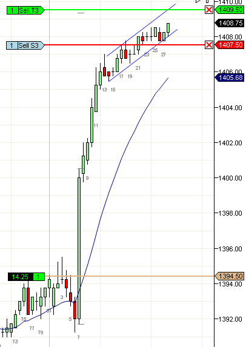

Climax top
https://ninetrans.blogspot.com/2012/05/climax-top.html

Occasionally, you will hold through a large move that will give you decent profits. At a certain point, you would need to make a decision to either exit or to hold for even more. There have been many times when I have exited at a decent profit and the price has ended up moving beyond my target by many points. I never regret it, simply because a guaranteed good profit is far better than a theoretical great profit with the real risk of losing all your gains.
However, optimizing exits is a very important part of trading and I've been able to approach it from many angles. The simplest way to exit is to wait for a trend termination signal. On a strong bull move such as the AM trend, if you see bars getting smaller (b13-25), there is an excellent chance that the termination will be in the form of a TTR (b33-37).
When buyers are no longer able to create healthy looking bars, the move is over. If you see three or more dojis in a pullback, its best to exit right away or on the next push.
Barring this, if the price has moved sufficiently through the trendline (b31-47) and especially if the move has its own trendline in a counter direction, there is a very good chance the trend is over and you should look to exit.
While those are great places to exit, sometimes you get what I call an undeserved gain. A push that comes from nowhere (b28-29) and this is a form of climax and you can exit anywhere during the push. Sometimes a climax bar can be a trend bar or two such as b29 and you can easily exit on its close. You can also exit on the first L1 after the climax (below b30). My preferred method is to exit on the push if my original target is close because a climax can quickly turn into a reversal bar.